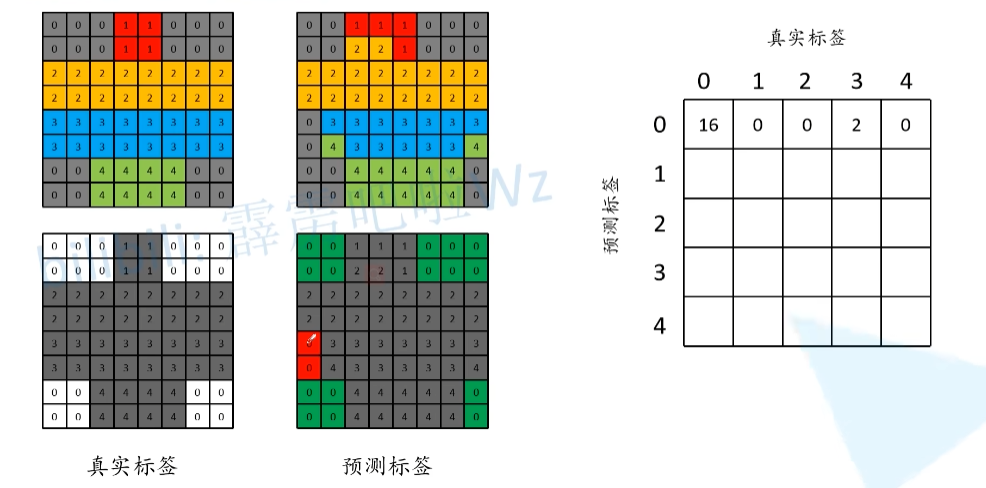
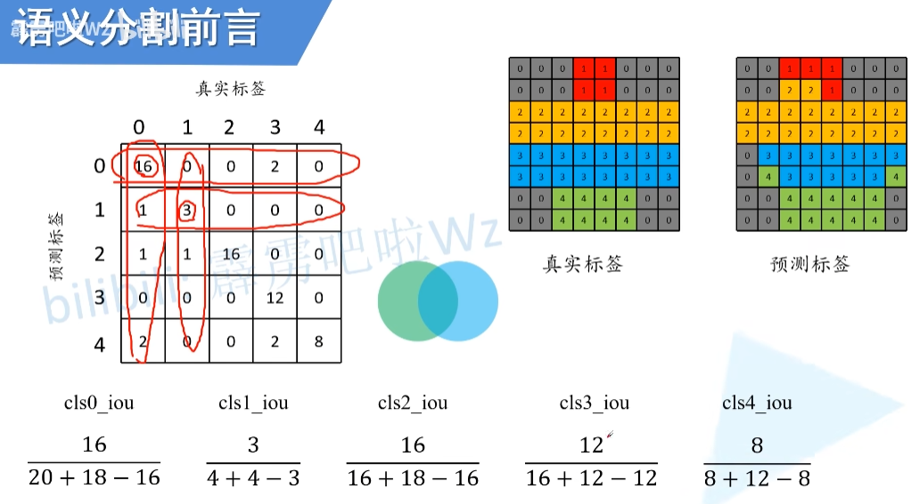
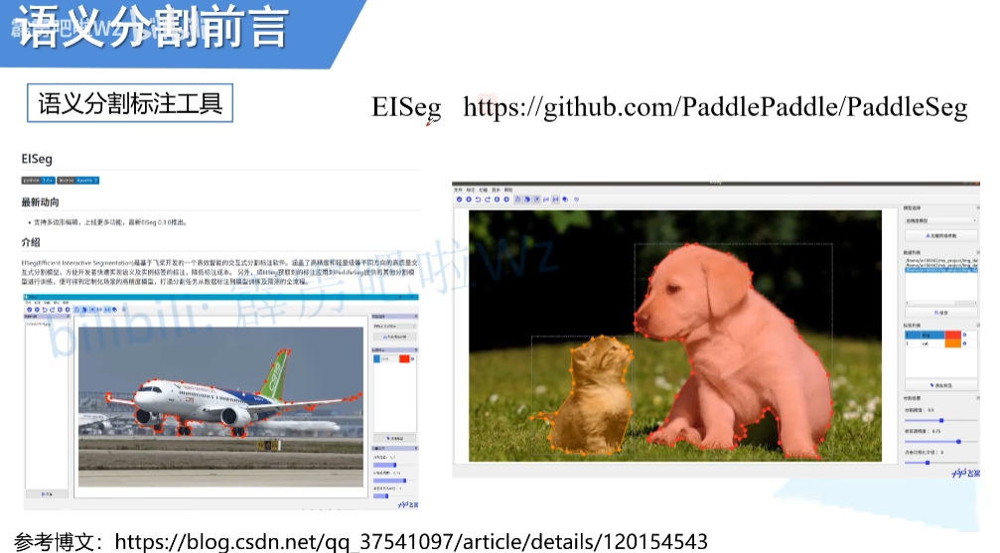

Week6
模型基础
一、语义分割概念
学习视频
目标：


（三）语义分割任务常见数据集格式
Pascal VOC
语义分割中提供的是png图片（记录每个像素所属的一个类别信息），这个png图片使用调色板的模式进行存储。
图片（第二张图片）实际是一个一通道的图片（黑白图片），但看到的确实彩色的。
用 python 的 Pillow 去读取 png 图片的话，默认读取的是调色板的模式（P模式），通道数为1（单通道）。
但是读取图片进行训练的时候只需要关注每个像素所属的类别索引即可
目标的边缘都会有一个特殊的颜色进行分割，或者图片中的一些特殊去也会用这个颜色进行填充，而这些位置对应的像素值是255万。在训练过程中，会抛弃像素值为255万的地方，因为这些地方并不好严格确定其所属类型。
除此之外，有一些不好区分类别的地方，也可用这个颜色进行填充。例如图中的长方形区域，在原图中是有一个飞机的尾翼部分的，但是并不好进行分割，故直接使用了像素值为255的数值进行填充，填充遮蔽之后再训练网络的时候就不会去计算这部分的损失。

像素值指的是数字图像的基本单位像素所具有的数值信息。它是用来定义图像的亮度或颜色等级的，对彩色图像而言，每个像素通常包含了红、绿、蓝三个颜色通道的数值信息，这三个颜色通道的数值组合决定了该像素呈现的颜色。
像素值是三维数值

MS COCO
MS COCO数据集介绍以及pycocotools简单使用_coco数据集最多一张图有多少个instance-CSDN博客
这篇论文是关于读取每张图片的分割信息的部分，如何读取并得到每个图像所对应的标签图片
针对图像中的每一个目标都给出了一个多边形的一个坐标形式（x坐标.y坐标，两个一组一个坐标点，点连成线，得到目标），将图像中的所有目标绘制出来，即可得到右下角抽离出来的训练图案。
这个结果图片与 Pascal 的 png 图片结果是一样的，不过并没有标注边缘信息，因此使用MS COCO数据集就需要自己将多边形信息解码成png图片（期望的标签图片）。计算损失时，就是拿预测的每个像素对应的类别与真实标签的每个类型进行对比计算。
另外，记录的多边形信息除可用于语义分割外，还可以用于进行实例分割，因这样已经记录了每个目标的，是能够将每个目标都区分出来的
（四）语义分割得到结果的具体形式
单通道图片
- 以下是单通道 + 调色板，利用 PyTorch 官方的 FCN 网络预测的结果（背景位置像素值为0， 飞机位置像素值为1，人位置的像素值为15）。
如果直接以灰度图片显示的话，看到的图片是一幅黑色的（因为不同目标的像素值实际都很小—-1和15），肉眼根本看不出区别，加上调色板，可以让每个像素对应一个彩色，方便可视化我们的预测结果。
- 每个像素的数值对应类别索引
（五）常见语义分割评价指标
Pixel Accuracy（Global Acc）
- 分子是预测标签图像中所有预测正确的像素个数的总和
- 分母是图片的总像素个数
mean Acc
将每个类别的 Acc 计算出来，然后再进行一个求和，然后再取平均
mean IoU
计算每一个类别的 IoU，然后再对每个类别 IoU 的累和求平均
其实和目标检测 IoU 理论上是一样的，都是两个目标面积的交集比上他们面积的并集
- 假设绿色的圆圈对应的是真实的标签，蓝色的圆圈对应的是预测的标签，那么n~ii~ 对应的是这两个圈重合的部分，即预测正确的部分
- t~i~ 对应的是类别 i 的总个数，即绿色圆圈部分的面积，而
 对应的是预测标签中所有预测为类别 i 一个像素总个数，即蓝色圆圈部分的面积，由于计算的时候中间部分计算了两次，所以还需要减去一次中间部分 n~ii~
对应的是预测标签中所有预测为类别 i 一个像素总个数，即蓝色圆圈部分的面积，由于计算的时候中间部分计算了两次，所以还需要减去一次中间部分 n~ii~
论文中最常见的是 mean IoU
n~ii~ ：针对类别i，预测正确的总像素个数

Pytorch 官方的一个计算方法——通过构建一个混淆矩阵来进行计算

- Global ACC
- 为了方便理解，现将所有标注为0的位置设置为白色，非0标注的位置全部设置为灰色，这样把所有预测标签为0的结果全部提取出来了，
- 然后预测正确的位置用绿色进行表示，预测错误的位置用红色表示
- 右图中16是预测为0的正确像素总是（即绿色像素总个数），2为预测为0的预测错误的像素总个数（即红色像素总个数），错误像素原本对应的索引是3

- 同样在预测标签当中，将所有预测为1的结果全部提取出来，预测正确的用绿色表示，预测错误的用红色表示

- 以此类推，可以分别预测出类别2，类别3，类别4对应的参数
- 最终得到一个混淆矩阵
- 分子是预测标签图像中所有预测正确的像素个数的总和
- 分母是图片的总像素个数
- 对角线对应的全部是预测正确的像素个数，即分子是混淆矩阵对角线上的数字之和
- 可以将混淆矩阵的所有个数相加得到分母，或者直接使用标签（8行8列8*8=64）得到像素值

- mean ACC

- mean IoU


（六）标注工具
- Labelme

- EISeg —- 百度开源的深度学习框架

开源仓库：PaddleSeg/EISeg at release/2.10 · PaddlePaddle/PaddleSeg
二、转置卷积（Transposed Convolution）
[1603.07285] A guide to convolution arithmetic for deep learning
（一） 介绍
- 在语义分割和对抗神经网络 gan 当中的作用：采样（upsampling）
- 左侧的图是一个传统的卷积，输入的是高宽为 4 4 的特征层，克隆大小是 3 3的，padding = 0， strides = 1，通过卷积之后，得到的输出特征层的高宽是 2 * 2 的
右边的图是转置卷积，对于输入的是 2 2 的特征层，同时在四周填充一些零元素，填充之后同样使用 3 3 的卷积核来进行卷积处理，通过转置卷积之后，发现输入特征层大小是 2 2，输出特征层大小变成了 4 4，输出变大了，这也是转置卷积最常用的一种情况，就是伤采样。
转置卷积不是卷积的逆运算
deconvolution卷积逆运算的名称，但同时在某些地方也被认为是转置卷积，这很容易混淆，所以一般不用这个做称呼
转置卷积只是将特征层的大小还原回卷积之前的大小，但其数值是和输入特征层的数值不一样，所以转置卷积并不算一个卷积逆运算的过程
- 转置卷积也是卷积
第一次听到转置卷积是在李宏毅老师课上，印象深刻的一句话：转置卷积就是卷积。对了，补充一下，把卷积核矩阵转置乘原图矩阵就是转置卷积，因此卷积运算的反向传播就是通过转置卷积实现的。以及转置卷积在生成任务中如果卷积核大小为3，步长为2，会有非常明显的棋盘效应，因此更推荐使用最临近插值或双线性插值后再接一个卷积来取代转置卷积。
（二）转置卷积运算步骤

具体步骤
首先对特征图进行处理：在特征图每个元素间填充 s-1行、列 0元素，在特征图四周填充k-p-1行、列 0元素
注：此处的s，p，k为得到该特征图所进行的相应卷积操作的步长、填充及卷积核大小，即原来下采样(正向卷积)时相应的参数
(s-stricks p-paddingk-卷积核大小kernel-size)
然后对原始卷积核(下采样用的卷积核)进行上下翻转+左右翻转
- 最后用翻转后的卷积核对步骤1处理后的特征图进行卷积操作，步距为1，填充为0
三、Dilated Convolution膨胀卷积（空洞卷积）
（一）什么是膨胀卷积？
- 膨胀卷积：最早由MULTI-SCALE CONTEXT AGGREGATION BY DILATED CONVOLUTIONS(基于膨胀卷积的多尺度上下文融合.2015)提出
- 最初膨胀卷积概念的提出是为了解决图像分割的问题——常见的图像分割算法通常使用池化层和卷积层来增加感受野(Receptive Filed)，同时也缩小了特征图尺寸(resolution)，然后再利用上采样还原图像尺寸，特征图缩小再放大的过程造成了精度上的损失，因此需要一种操作可以在增加感受野的同时保持特征图的尺寸不变，从而代替下采样和上采样操作，即膨胀卷积。
- 上图展示了一般卷积的过程，其卷积核大小为3×3，步长s=1。
- 看完了熟悉的卷积操作，接着我们来看看何为空洞卷积，如下图所示：
上图展示了空洞卷积的过程，其卷积核大小为3×3，步长s=1，r=2。你或许会问了，这个r是什么呢，其实啊，这个r正是普通卷积和空洞卷积的差别所在，我们称之为膨胀因子。当r=1时，表示卷积核各元素之前没有空隙，即相邻两个元素间位置相差1，此时其实就是我们正常的卷积，所以广义上说，普通的卷积是一种特殊的空洞卷积；当r=2时，表示卷积核各元素之前有一个空隙，即相邻两个元素间位置相差2，此时就是我们上图中的卷积核，为方便大家理解，我把上图r=2时的卷积核提取出来，如下图所示：

当然了当r=3、r=4都是同样的道理，这里就不过多叙述了。
（二）为何要用空洞卷积？
知道了什么是空洞卷积，自然想要问为什么要用空洞卷积呢？其实使用空洞卷积最主要的用途就是增大感受野。enmmm，先来介绍一下什么是感受野？
感受野就是指特征图上的一个像素对应原图多少尺寸的像素，画一个简单的图来解释一下：
上图是一个普通卷积的过程，卷积核大小为3×3，步长s=1。可以发现，所得特征图中一个1×1像素区域（灰绿色）对应了原图中的3×3大小的区域，这就是3×3大小卷积核的感受野。
再来看，对刚刚得到的特征图（橙色）再经过一次3×3卷积，如下图所示：
很显然，此时最后一层特征图中一个1×1像素区域（青蓝色）对应了橙色特征图中的3×3大小的区域，这也是3×3大小卷积核的感受野。
那么，现在将上述两步放在一起，如下图所示：
此时最后一层特征图中一个1×1像素区域（青蓝色）对应原图多少尺寸大小的区域是5×5，因为青蓝色像素感受野包含了整个橙色的区域，而整个橙色区域的感受野正是下方5×5区域大小的范围。【这里应该也好理解吧，可以自己动手画画理解理解】
通过上文叙述，知道了感受野是怎么计算的了，下面给出计算感受野的公式，如下：
其中，表示第层的感受野，表示层的感受野，表示步长，表示卷积核大小。可以将公式代入到上面的例子中验算一下是否正确。首先，蓝色、橙色、青蓝色特征图分别表示3层、2层、1层，现我们要计算1层相对于3层的感受野，首先要计算出1层对于2层的感受野，即
得到了，就可以计算1层相对于3层的感受野，即
【注：对于感受野，我觉得很有必要很大家强调一点，即我们所说的感受野都是相对于原图说的，即某层特征图中一个像素尺寸对应原图多少像素尺寸】
通过上文的解释，对感受野的计算已经有所了解了。再回到本节的问题上——为什么要使用空洞卷积。使用空洞卷积一个关键原因就是可以增大感受野，这样在检测、分割任务中就能对大尺寸物体表现出较好的效果。至于空洞卷积为什么可以增大感受野，我觉得也非常好理解啊，如下图所示：
上图表示使用3×3的卷积核进行空洞卷积，r=2，很明显，此时灰色特征层的感受野为5×5。其实呢，计算空洞卷积感受野也有公式，我们这样来思考，上图是3×3的卷积核，r=2，这样构成的一个空洞卷积核（乱起的名字哈，不用在意）的尺寸就相当于是5×5大小了，这时候我们感受野的计算就相当于5×5卷积核的感受野了。既然这样，我们能否找到空洞卷积核大小和原始卷积核大小的关系呢？当然可以啦，如下：
Fi=(F{i-1}-1)×stride + k’=(F_{i-1}-1) × stride + k + (k-1)(r-1)
$$
（三）空洞卷积存在的缺陷
上文谈及了空洞卷积可以增大感受野，这是空洞卷积本身的优势。那空洞卷积是否有缺陷呢？关于这点大家可以看看这篇论文，该篇论文就主要介绍了空洞卷积存在的缺陷以及解决方案。
其实啊，空洞卷积的缺陷主要体现在存在网格效应，我们可以来看一下下图：
上图的卷积核大小都是3×3，r=2。第一次空洞卷积后的感受野为5×5，第二次空洞卷积后感受野大小为9×9，第三次空洞卷积后感受野大小为13×13。【这很容易得到，大家套我上文给出的公式即可】
我们可以看到，连续使用三次r=2的空洞卷积会导致中间有很多空格，即很多像素没有利用到，这会导致出现网格效应，我们拿语义分割为例，如下图所示：
可以看到，在分割结果中存在很多很多的不连续的小网格区域，这就是网格效应，也是空洞卷积带来的副作用。
我们再来看看本小节的第一张图，你可以发现，小网格上颜色的深度是不一致的。其实啊，颜色的深度表示该像素利用了原始特征图上像素的次数。是不是不好理解呢，这里我详细的说一下。【这一部分推荐视频中也没有介绍的很清楚，下面几张图片都来自视频】
首先我们来看一下，经过第一次3×3的卷积，每个像素都只利用了原图上的一个像素，这很好理解，如下图：
接下来，经过第二次空洞卷积，得到的结果如下：
这次看着复杂多了，但其实你要明白了某个数字是怎么得到的，其它的都很简单了。我们来看上图最中间红色的9怎么得到的，如下图所示：
右图中的一个像素是由左图的9个像素得到，而左图9个像素都只对应原图上了一个像素，故右图红色点上数字为9。我们再以左上角的一个像素为例，如下：
上面右图中左上角的一个像素对应左图中9个像素，而这9个像素只有包含一个红色像素，故左上角的数字为1。介绍了这两个例子后，大家可以尝试其它的数值。
最后，经过第3次空洞卷积后，得到下图：
（四）如何高效利用空洞卷积
既然空洞卷积存在着网格效应，那有什么方法可以解决这个问题吗。开门见山，论文中巧妙的使用了不同膨胀因子的空洞卷积，这样就能有效解决空洞卷积网格效应的问题，如下图所示：
是不是发现没有网格了呢，而且感受野大小也是一样的。这里在来看看使用这种方式在语义分割中的效果，如下图：
能很直观的感受到使用不同r的空洞卷积的效果要更好。